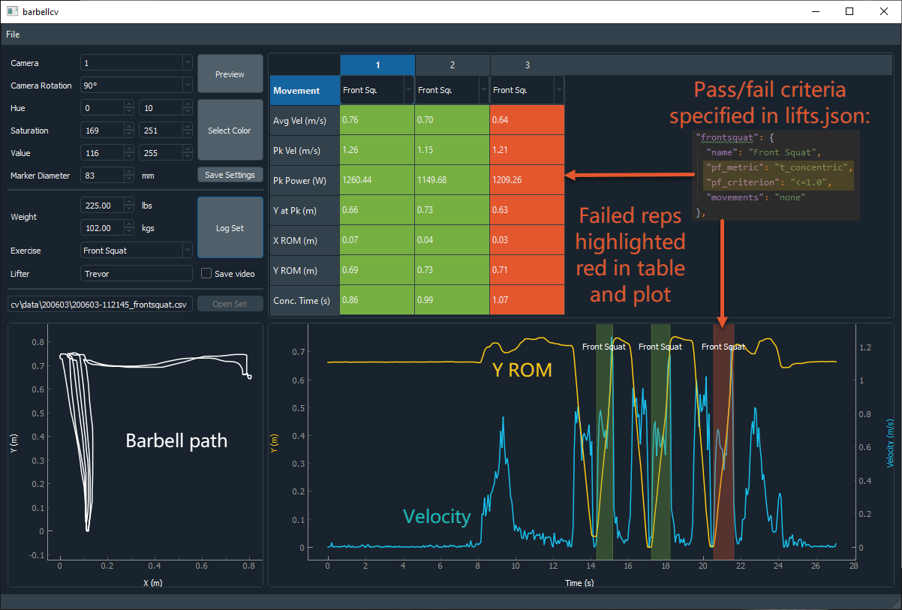

|||---barbell-cv---|||
Table of Contents
Requirements
Setup
Logging Sets
Editing Sets
Accuracy Considerations
Quick Start
- Preview your webcam using the "Preview" button, and rotate it if needed using the adjacent dropdown.
Press Enter to escape the preview.
- Select the color of your barbell marker interactively.
- Press the "Select Color" button.
- Drag your mouse over the marker in the popup (make sure to move the marker around and select it under
varying light conditions and angles).
- Press Enter when the marker is tracked satisfactorily.
- Select the exercise you want to do.
- Add exercises that you find missing to the /resources/lifts.json file.
- Input the weight for the set in lbs or kgs.
- Press "Log Set" and wait for the webcam preview to show before lifting.
- After lifting, press the Enter key to complete the set.
- The results for the set are shown.
